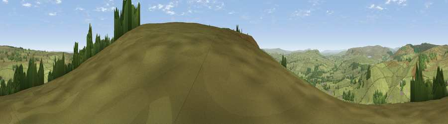

Viewpoint near Bolton Abbey
#12888 in England · top 17% of its area beats it · near Bolton AbbeyWhere it is
The exact computed spot (SE 10225 53425). Click the marker for map links.
The view, rendered

A 360° render of this exact spot computed from the terrain model, tree cover and land cover — summer colours, afternoon light, calibrated against photographs of famous viewpoints. Real trees, hedges and buildings will differ in detail.
The panorama
Grey silhouette: terrain skyline in each direction (720 bearings, Earth curvature and refraction included). Dashed green: skyline with trees (+15 m) and buildings (+8 m) as obstacles. Blue strip: how far the ground is visible on each bearing.
Where the view opens
Wedge length = distance to the farthest visible ground on that bearing (vegetation-aware). Rings at 10, 25 and 50 km.
What fills the view
86% grassland · 14% woodland ·
Angular shares of the visible panorama (visual magnitude), not map area. Landscape diversity 0.19 (0–1 Shannon).
Key numbers
More beautiful places nearby
The staircase of upgrades: each row has a higher view potential than everything closer. Driving times are estimates from straight-line distance, calibrated against real road routing — check an actual route before setting out.
| Place | Direction | Drive | Score |
|---|---|---|---|
| The Old Pike | S · 1 km | ~2 min | 64.0 |
| Beamsley Beacon | SSW · 1 km | ~3 min | 69.0 |
| Viewpoint near Skyreholme | NNW · 6 km | ~12 min | 69.8 |
| Viewpoint near Skyreholme | NNW · 7 km | ~14 min | 70.2 |
| Lord's Seat | NNW · 7 km | ~14 min | 71.1 |
| Viewpoint near Bewerley | NNE · 11 km | ~21 min | 75.7 |
| Viewpoint near Bewerley | NNE · 11 km | ~21 min | 76.8 |
| Viewpoint near Otley | SE · 13 km | ~25 min | 77.5 |
53.97679, -1.84559 · source: screening · position refined by local search. Computed location — check access rights before visiting.